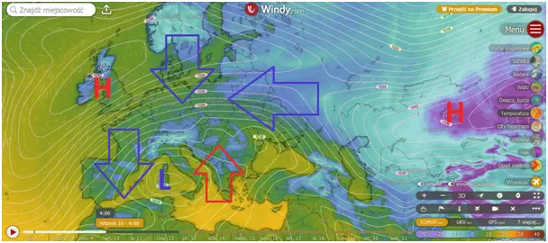
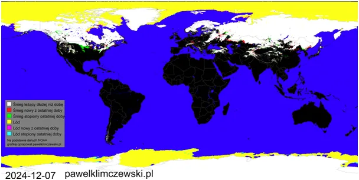

Generał zima korzysta z rzadkiej kombinacji cyrkulacji i atakuje od wschodu.
Niż (L) znad Morza Śródziemnego dostarczy wilgoci, tymczasem dwa wyże (H) znad Kazachstanu i Wysp Brytyjskich zgodnie przesuną masy mroźnego powietrza ze wschodu i północy. Zima nadciągająca od północy i zachodu to atlantyckie wilgotne fronty. Cyrkulacje ze wschodu mogą być zapowiedzią okresów zimowych bez częstych odwilży, przekonamy się o tym na przełomie roku. Taka rosyjska zima ma wiele zalet, mimo mrozów nie ma wiatru i jest słonecznie. Czynnik chłodzący jest stabilny i ogrzewanie domów nie musi być kosztowne, w przeciwieństwie do okresów z wietrzną pogodą.

Zaledwie tydzień do Łucji, czyli 13 grudnia dnia, w którym zmierzch zapada najwcześniej. Po tym dniu do 21 grudnia dzień nadal będzie się skracał, ale kosztem późniejszych świtów. Jest to skutek nałożenia się ruchu wirowego Ziemi na jej ruch wokół Słońca. Gdy tancerka krąży wokół stojącego w środku tancerza i dodatkowo wiruje w odpowiednim kierunku przy każdym obrocie traci tancerza z oczu o chwilę późnij niż trwa czas jej jednego obrotu wirowego. Ot cała tajemnica gastronomi.
Pierwsza mapa to prognoza na wtorek, ale wschodnie wiatry w zależności od regionu kraju poczujemy już od niedzieli.

Mapa śniegu sugeruje przesunięcie się cyrkulacji północnych na północnym Atlantyku znad Ameryki nad Eurazję, Poznajemy to po zieleni w USA i czerwieni w naszej okolicy.
Paweł Klimczewski